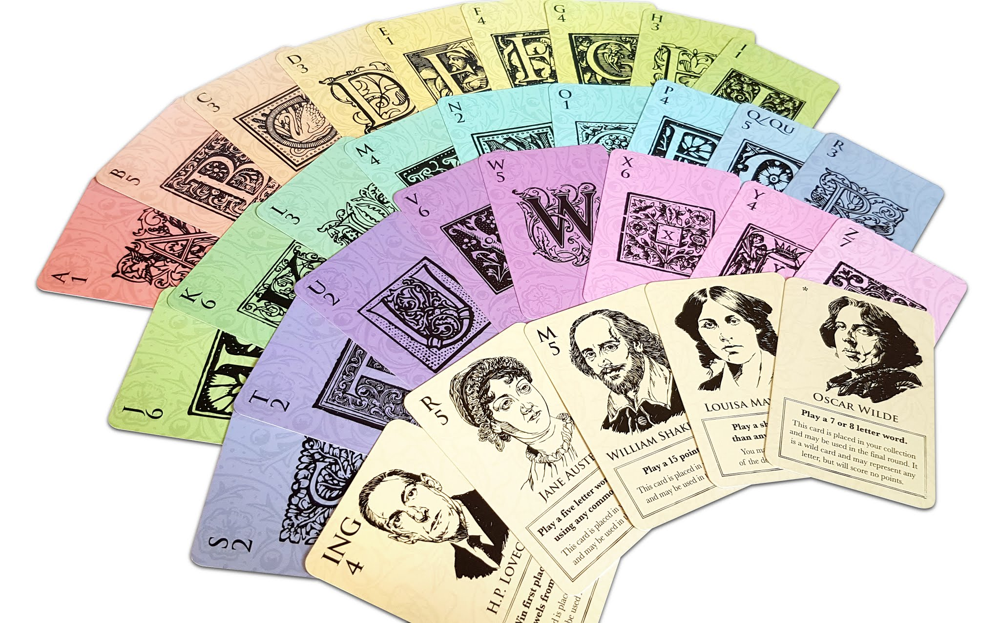

Letterpress and Movable Type Design Diary
I started working on Letterpress around 2015. I was noodling around with hobby game design and I was very inspired by some of the things Daniel Solis was doing in the print-on-demand space. He was making games that only used cards and was experimenting and exploring the variety of experiences players could have with just those cards. That limitation in that design space really got my design gears turning.
At the time, I was also playing a lot of word games. In fact, I've always played a lot of word games - predominantly Scrabble - even before I became aware of the wider hobby games industry. When I was a foreign exchange student in Pittsburgh, I hated my dorm room and instead of staying there, I spent my time playing loads of Scrabble with friends in a nearby coffee shop. I think word games are immediately social - perhaps because they are immediately approachable. Even if their rules are not simple, most people are already experts at the central mechanic of these games - building words! - and that means that most people are willing to sit down and give them a play.
So, six years ago, inspired by card game design and immersed in a variety of word games, I knew I wanted to make something that combined the two. There were a few common issues with word games that I knew I wanted to address:
- There is often too much downtime. Word games can get quite cerebral, as players wrack their brain looking for a way of using just one more letter - it's easy to always feel on the cusp of a better word. And this can lead to some VERY long turns, which is not a lot of fun for those left waiting.
- There can be a very noticeable skill disparity between players. If the only skill being tested is how good your vocabulary is, it's very easy for players to feel mismatched and this might mean that the game's ending is a foregone conclusion.
- Playing with more than two players is often unwieldy. And that kind of sucks because, as I mentioned, it's easy to convince people to play a word game! So I want more word games that handle more players.
As a response, I designed Letterpress. Of course, it wasn't called that at the time. It was just some scraps of paper!
Letterpress is a drafting game at its heart, but it has a few twists in it to make things really interesting. Here's how it works:
There are five rounds in the game - and each round you will make a single word from up to eight letter cards. That's five words per player in the whole game - yes, the game is quick! The first four rounds follow the same structure:
- Deal three letter cards into the middle of the table. These are like the river in Poker and are available for everyone to use.
- Deal five cards to each player.
- Then players do a pick-and-pass draft. This means that players look at their cards, keep one, and pass the rest to the player on their left. And they keep doing that until they have chosen five cards to keep.
- With the five cards they have chosen and the three cards in the river, every player simultaneously makes a word and simultaneously reveals that word, discarding any unused cards.
- Based on their words, players are ranked, first place to sixth place, and then conduct another kind of card draft. The player who came in first takes any two played cards - from the river or from in front of any player - and adds those cards to their own score pile. Then the second-place player does the same, adding cards to their score pile. And we do that all the way to the sixth-place player. If you come later in that order you’ll take fewer cards and have fewer to choose from.
- Then we sweep the cards from the table and play the next round.
The big twist comes in round five. At this point, every player has built a stack of letter cards in their score piles - anything from 4 to 12 cards. In the final round, we deal three cards to the river as normal, but rather than deal cards to players, each player takes their score pile into their hand and builds a word with the cards they have drafted over the whole game. And it's just this last word which determines the winner. If you played poor words but drafted wisely, you can still grasp first-place in this final moment of truth! That final round is nail-biting!
So let's look at those three issues I spoke about before:
- Player downtime. In Letterpress, everybody drafts simultaneously and builds words simultaneously. It's always your turn! If a player is having a hard time building a word (which is less likely with only eight letters), the time they are taking is far less noticeable.
- Skill disparity. The different forms of drafting and building for a final word emphasises tactical and strategic opportunities, so even a player with a weaker grasp of vocabulary is still in with a chance. Rather than building the very best word, they could outmaneuver their opponents.
- Player count. Because there is no central board being manipulated and no waiting for your turn, the game handles six players quite comfortably. The two player game is a more strategic experience, especially during the pick and pass draft, as you pass the same bundles of cards back and forth. The six player game is more tactical, with players not necessarily knowing what letters are coming around the table and grabbing what opportunities they can.
With my first prototype of the game in hand, I went to Playtest Dublin - my local playtest group - and it went down fabulously! It might have been the first design of mine that just worked well on its first public test, which is enormously satisfying. I was also quite surprised at how well it was received by people with English as a second language - I think the drafting mechanic is to thank for that.
So over the months, I continued to develop and refine the game, but the core loop stayed the same. The biggest change would come in the form of challenge cards. Each round, three of these are dealt onto the table and they provide an optional objective for players to meet - maybe score a certain value, make a longer word, play a short word, use a lot of vowels, etc. If players met an objective they would get a bonus - maybe the objective card would go into their score pile and count as a pair of letters in the final round, or maybe they would score a card off the top of the deck. These challenge cards widened the tactical space in the game - now you could draft wisely (or hatefully!), or play a great word, or snatch up the challenges instead.
At this point, I decided I would Kickstart a four-player version of the game, called Movable Type. Alisdair Wood drew up some illustrations for the challenge cards and I took public-domain artwork of initial capitals from the British Library. My wife did all the graphic design work (thank you!) and away we went! The game funded and I used a print-on-demand company to build and fulfill the games - my opinion being that Kickstarter campaigns should be super straightforward!

Every summer, the Playtest Dublin group attends a local maker event that draws big crowds of families. That year following the Kickstarter campaign, I brought all my remaining stock to the event and prepared to demo the game for the day. Much to my surprise, the game sold out! In retrospect, I think word games are a really easy ask for most people - they are willing to give them a try. And the drafting mechanics were a fun surprise for a lot of people who hadn't seen a modern hobby game before.
Around this time, Movable Type also won an award from the British Library for the use of digital resources in a commercial product. This meant I got to give a talk on stage at the British Library, which was just a dream come true!

So with these positive responses in mind, I decided to make a second edition. This time with nicer manufacturing and some gameplay tweaks. Now vowel cards were guaranteed to be in the river and there was a wider pool of challenge cards. I increased the card count so the game supported six players with a single box and I developed a solitaire mode.
As a sidenote, I’m really proud of the solitaire mode. While it's mechanically distinct from the main game, it tries to evoke the same feel. The drafting is done in a slightly different way and when you build your words, you actually play against your previous self. You have to beat your earlier words in order to earn cards into your score pile and letters you don't use feed into your devious AI opponent!

Movable Type: Second Edition funded on Kickstarter and I got my first taste of mass-manufacturing and mass-fulfilment, which is a whole other article itself. After that was fulfilled, the group at Playtest Dublin decided to combine our resources and do an Irish games exhibit at the UK Games Expo. That was a fun and tiring and stressful experience, but I got to meet Duncan Molloy who then worked at Osprey Games. A few weeks later, he called me up. He'd been playing Movable Type in the office, enjoyed it a lot, and asked about the possibility of licencing it for Osprey Games. This would become Letterpress.
Months passed, contracts were signed, and more months passed as Osprey conducted their own in-house development on the game.
If you've played the original game, you might be hard pressed to put your finger on exactly what has changed - it's a multitude of tiny changes that all add up to something bigger. The rules are a lot cleaner and tighter - the game was already very accessible, but Osprey have made the effort to ensure that anybody will be able to pick it up and understand what's going on. The challenge cards are also handled better and with less confusion - earlier versions of the game had some odd tie-breaking rules when multiple players all completed the same challenge. One simple rule change means that all those tie-breakers are unnecessary! Some of the changes they made are so obvious that, in retrospect, I'm embarrassed that I didn't think of them for the earlier versions (and how could I have missed the double meaning of “drafting” in a word game?!).
And as you would expect from Osprey, the game is gorgeous! A small, beautifully designed package, with a lot of game inside the box. It's available from... well... all kinds of places!